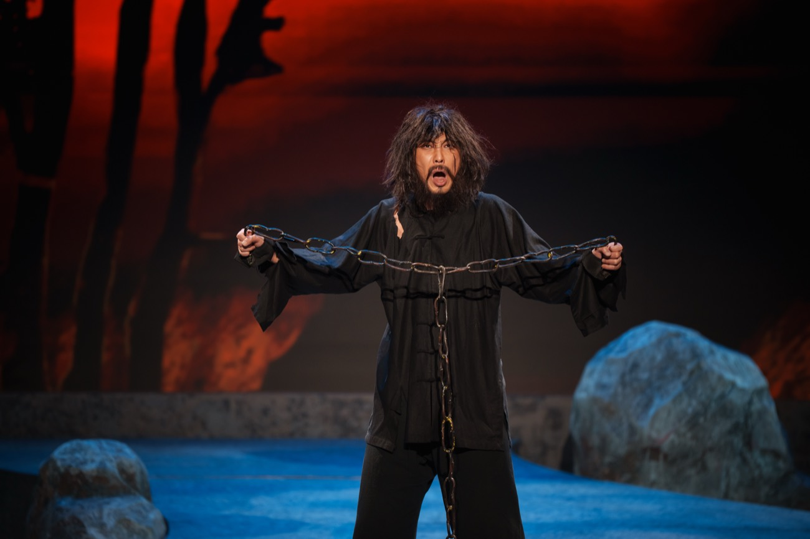
Chou Hu
Barítono
Una tragedia de amor, venganza y destino que funde la fuerza dramática de la gran ópera occidental con el alma de la música tradicional china. Regresa a Europa tras casi treinta años, en el marco de una gira excepcional en septiembre de 2026.
“Una creación de personalidad propia que casi iguala a Puccini en sus propios términos.”— The New York Times
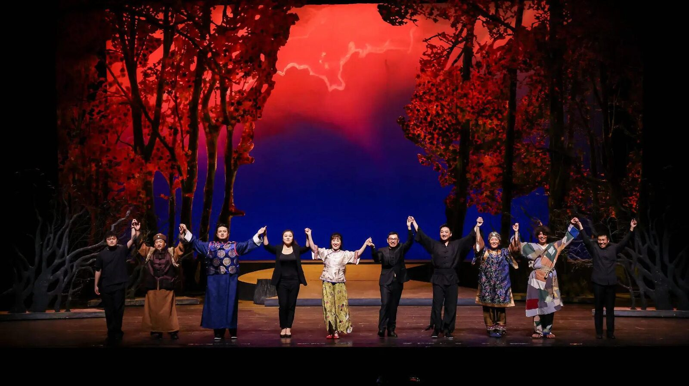
Estrenada en 1987 en Pekín, Tierra Salvaje lleva casi cuatro décadas cautivando al público. La partitura de Jin Xiang une el lirismo verista de Puccini con la percusión tradicional china —milenaria y ritual—, en una experiencia sonora única: un puente entre Oriente y Occidente. Aclamada hace treinta años por la crítica lírica internacional como una obra de referencia, el China National Opera & Dance Drama Theater regresa ahora para una gira europea excepcional: dos noches en Madrid y dos noches en París.
Una producción del China National Opera & Dance Drama Theater, presentada en Europa por China Arts and Entertainment Group (CAEG).
La historia se centra en Chou Hu, un hombre consumido por la venganza. Tras ocho años en prisión, escapa y regresa a su aldea para ajustar cuentas con el terrateniente que destruyó a su familia — solo para descubrir que su enemigo ya ha muerto, y que Jinzi, la mujer que siempre ha amado, es ahora la esposa del hijo de aquel, Jiao Daxing.
Atrapada en un matrimonio sin amor y sometida a la Madre Jiao —ciega y despiadada—, la pasión de Jinzi se reaviva con el regreso de Chou Hu. Los tres quedan atrapados en un triángulo imposible, sobre el telón de fondo de una vieja y amarga rencilla de sangre.
La tensión estalla en tragedia: un asesinato, la muerte accidental de un niño y una huida desesperada al bosque. Cercado al amanecer, Chou Hu pone a salvo a Jinzi —y al hijo que ambos esperan— antes de quitarse la vida, para que su amor sobreviva en la generación que viene.

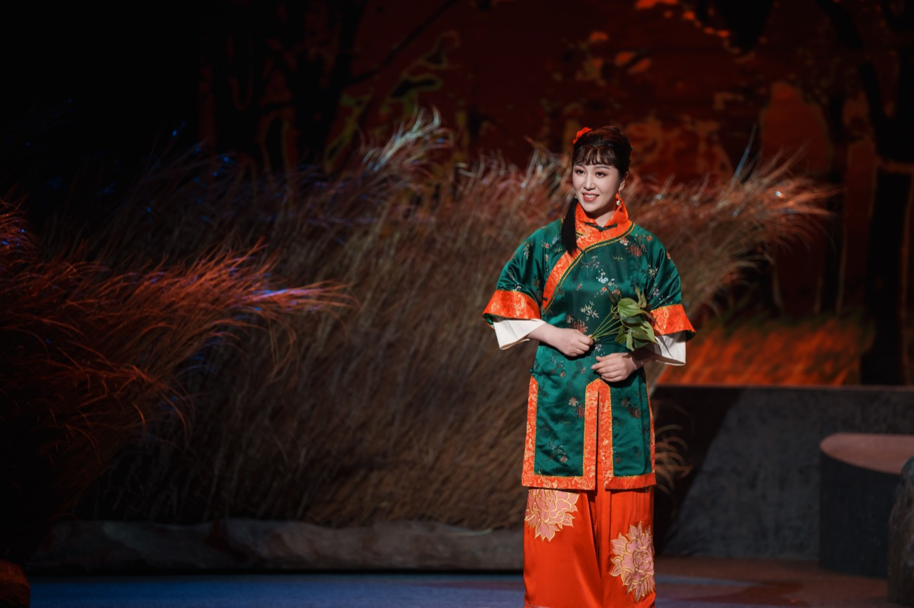
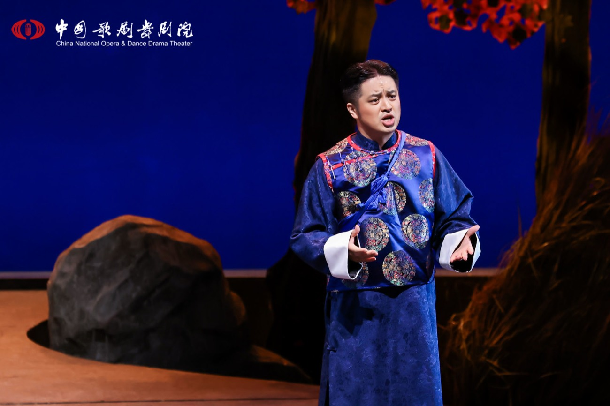
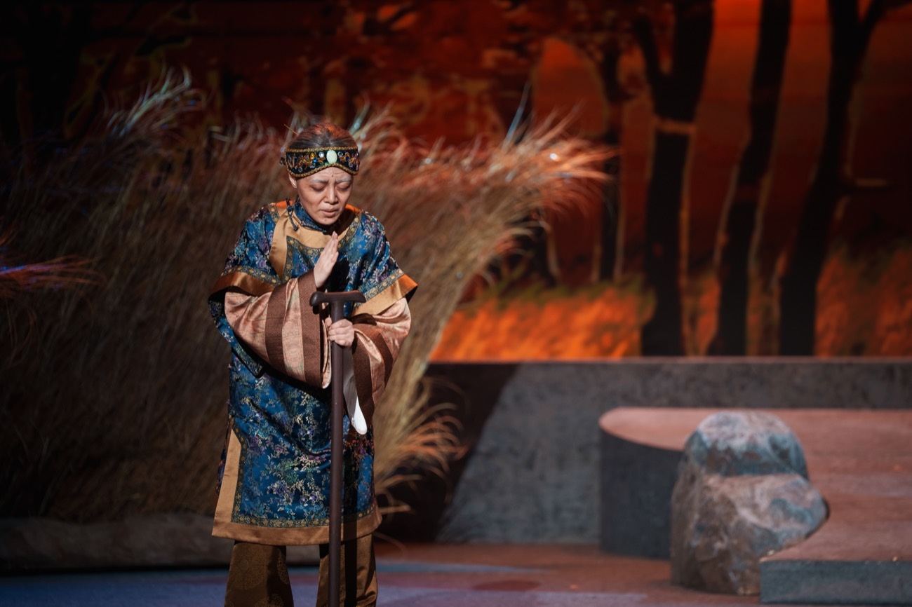
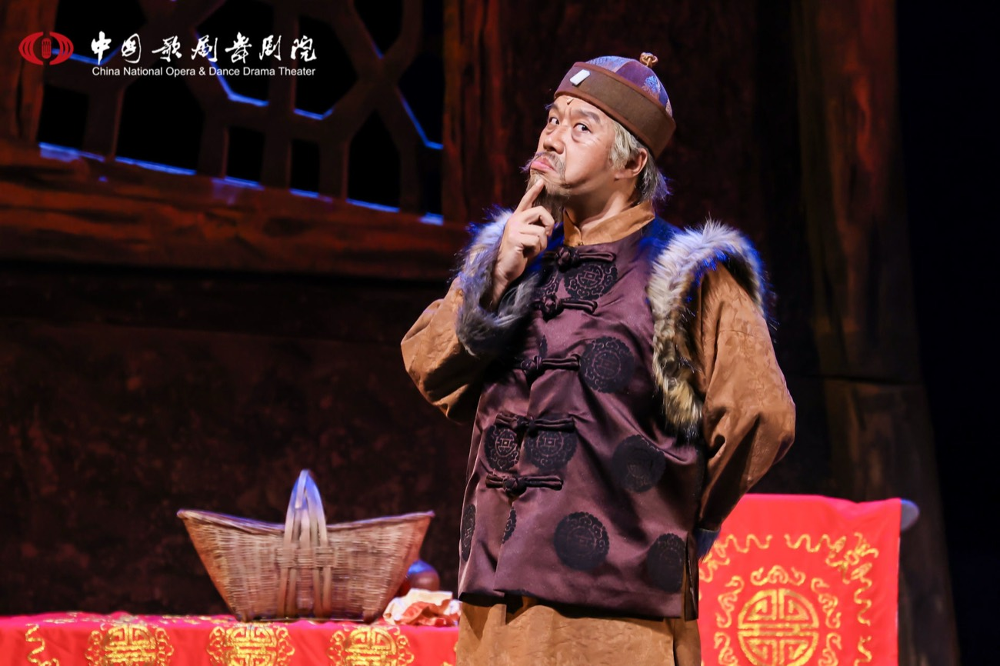
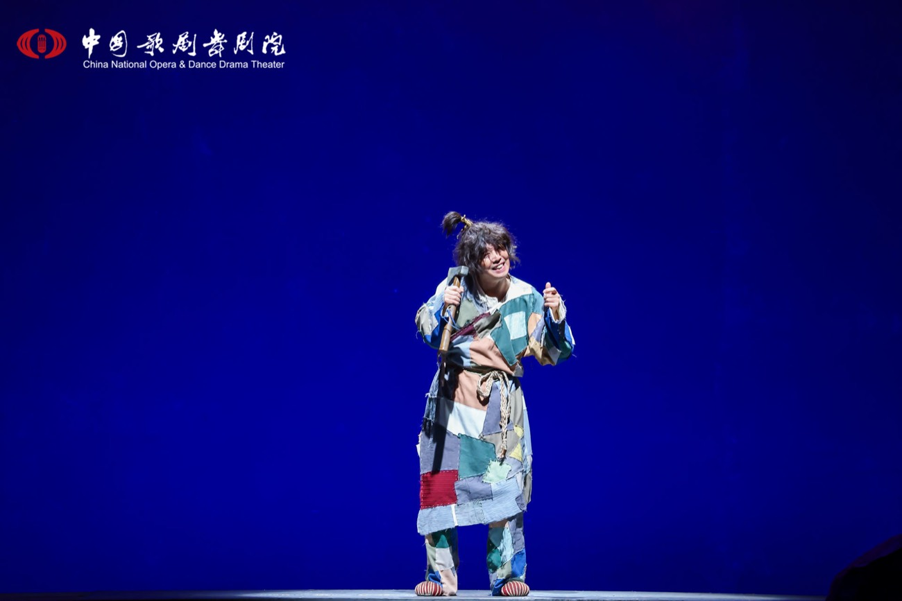
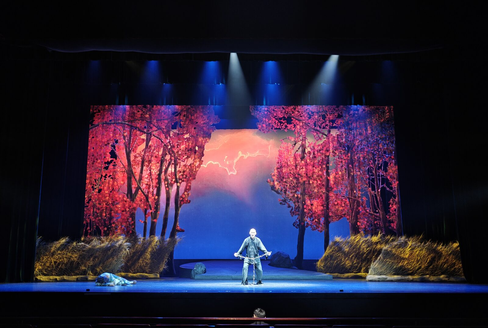
La tierra del norte de China yace sumida en tinieblas. Desde el fondo de un mundo injusto, las almas agraviadas claman al cielo: cuánta oscuridad, cuánto odio puede soportar la tierra.
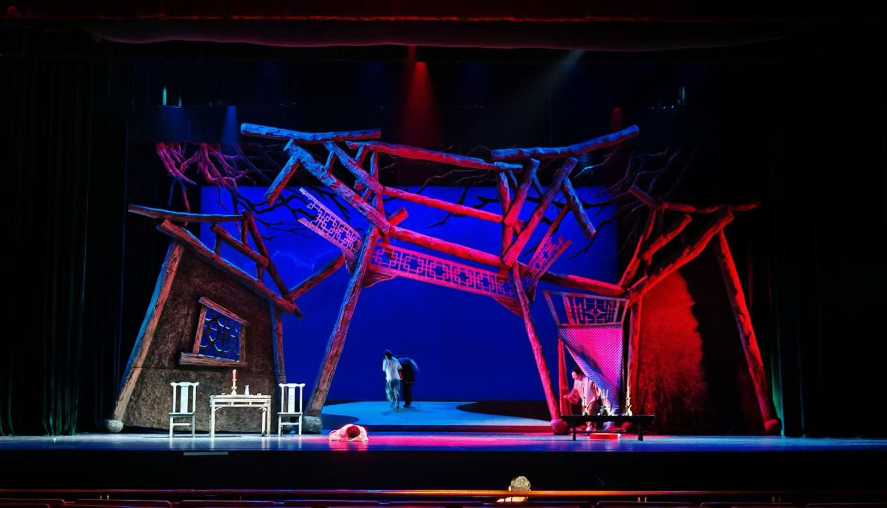
Tras ocho años en prisión, Chou Hu rompe sus cadenas y regresa para vengar a su familia. Pero su enemigo ya ha muerto, y Jinzi, su amor de juventud, es ahora la esposa del hijo de aquel, Jiao Daxing. Atrapada en la casa Jiao, ella sueña con huir — y de pronto Chou Hu aparece ante sus ojos.
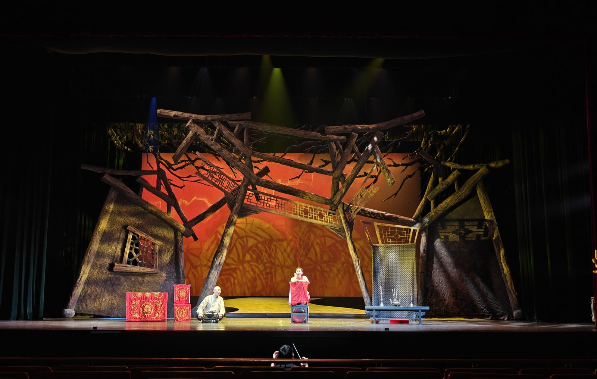
El viejo amor renace en diez días de encuentros a escondidas, hasta que la mirada ciega de la Madre Jiao los descubre. Entre su tiranía y el látigo de Jiao Daxing, Jinzi se rebela, y lo que prometía ser salvación enciende la tormenta.
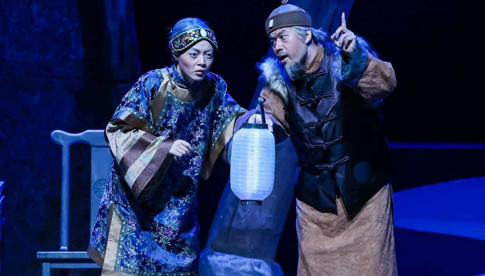
La Madre Jiao lo intenta todo, pero nada doblega a Chou Hu. En el estallido final, Chou Hu da muerte a Jiao Daxing — y la propia Madre Jiao, engañada, mata por error al único heredero de la casa.
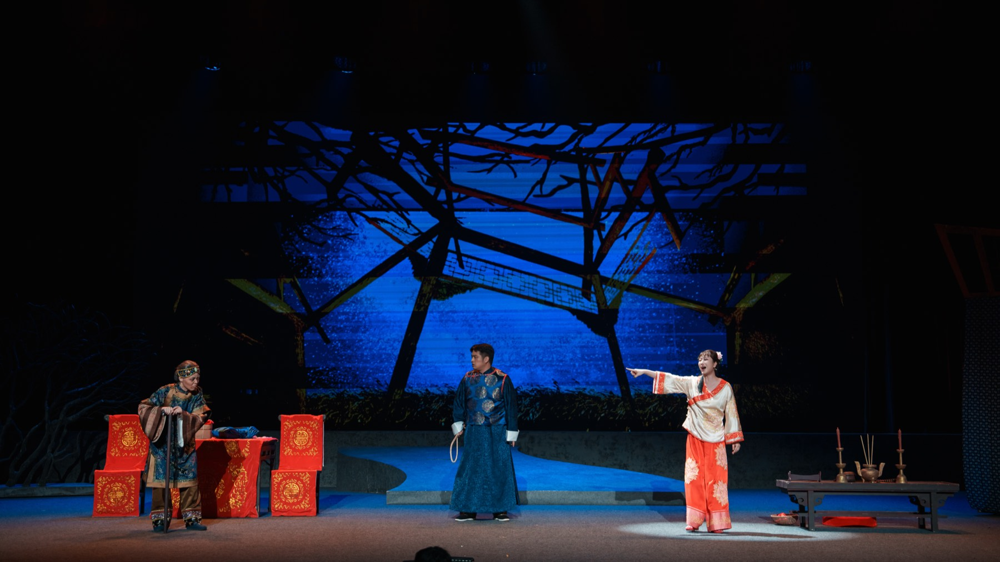
Chou Hu y Jinzi huyen hacia una tierra que imaginan de oro, pero se pierden en el bosque oscuro. Al amanecer, cercados por la policía, Chou Hu pone a salvo a Jinzi —y al hijo que ambos esperan— y se quita la vida, para que su amor sobreviva en la generación que viene.
Considerado el dramaturgo más importante de la China moderna, a menudo comparado con Shakespeare. Su obra teatral Tierra Salvaje, escrita en 1937, es una tragedia de venganza rural célebre por su profundidad psicológica y su mirada social.
Hija de Cao Yu y escritora reconocida por derecho propio, adaptó al canto la obra más oscura de su padre, aportando una mirada íntima y un libreto fiel a su espíritu.
Su partitura retoma el lenguaje verista de Puccini y lo entrelaza con la percusión tradicional china —milenaria y ritual—, dando a la obra una voz propia.
Director de la puesta en escena original, reconocido por un lenguaje visual deslumbrante al servicio del intenso drama psicológico de la obra.
Una creación de personalidad propia que casi iguala a Puccini en sus propios términos, con unos orientalismos mucho más convincentes.
The New York Times
La percusión es esencial en esta fusión entre Oriente y Occidente. La obra palpita de principio a fin.
The Christian Science Monitor Paulette Haupt, directora